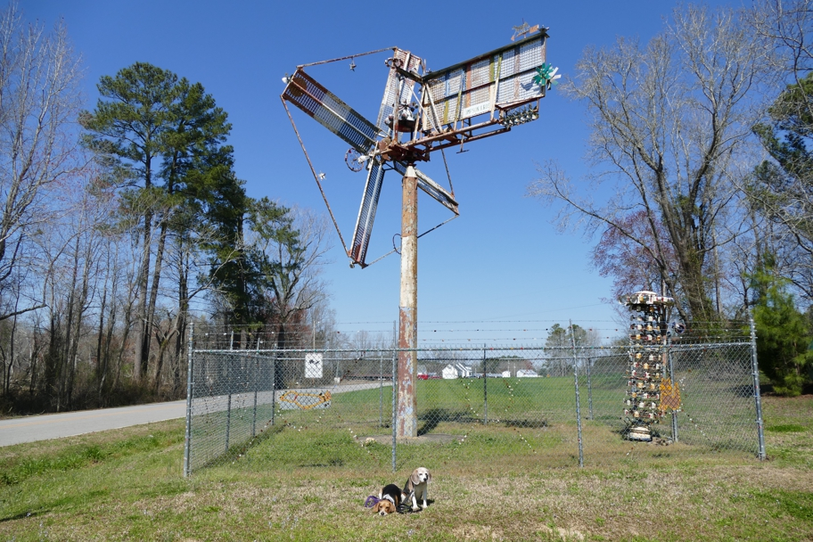

These two pieces, and a handful around the pond at my back, are all that remain at this spot of Vollis Simpson's kinetic artworks, which he called windmills and which became known as whirligigs. When we visited in 2012 Mr. Simpson and all his works were still here. He died later that year. The mounted whirligig includes an old road sign from this very spot, named for Mr. Simpson's shop. I noticed other roads in the area that were named after similar local features.
Halley Beagle North Carolina Wallace Beagle Wilson